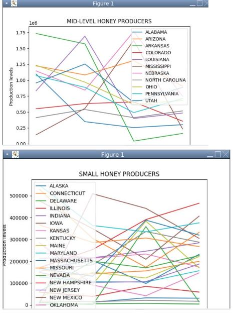
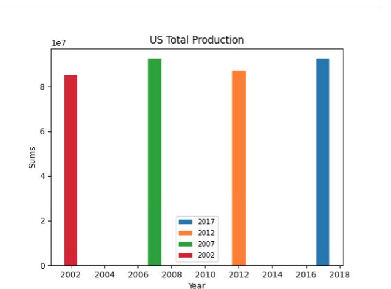
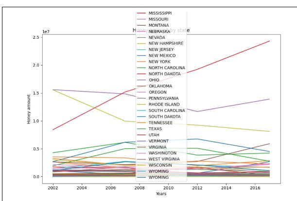
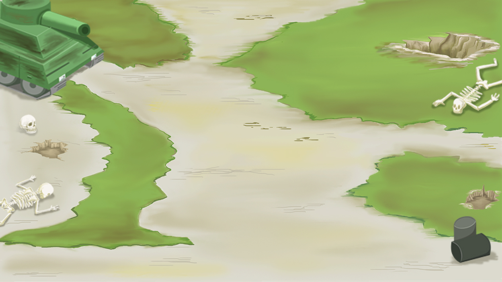

Home
Portfolio
About Me
This is my Portfolio Page!
My Scratch Project!

 my scratch game is a driving simulator in which you have to avoid other cars
or else your blow up. the main objective is to get as far as you can without
blowing up. you have a power up "H" which activates highbeams and grants
immunity.
my scratch game is a driving simulator in which you have to avoid other cars
or else your blow up. the main objective is to get as far as you can without
blowing up. you have a power up "H" which activates highbeams and grants
immunity.
PLTW 3.2.4 Graphs.



this is our project for PLTW 3.2.4 in which we researched honey and expirmented with how to code graphs
and analytical data.
My Minion Simulator!.
 This is my minion simulator! we created a game in which you can customize
a minion and the way it works is it you ask if its evil or good (yellow or purple),
then you can customize its features. We had the code create the minion and its features using shapes!
This is my minion simulator! we created a game in which you can customize
a minion and the way it works is it you ask if its evil or good (yellow or purple),
then you can customize its features. We had the code create the minion and its features using shapes!
Zombie Apocolypse game!.

This is our zombie apocolypse game! The objective is to shoot all the zombibes and survive the waves.
the way we did this is a over view, 2D game. if you survive all the waves and avoid getting killed by zombies, you win!